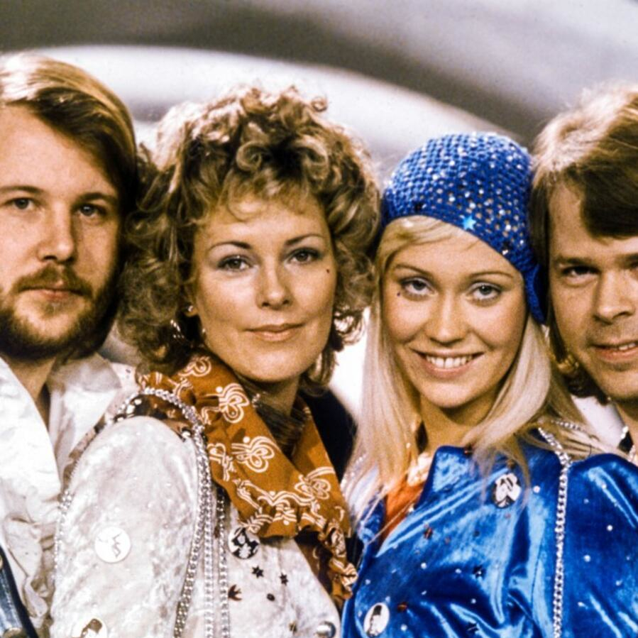
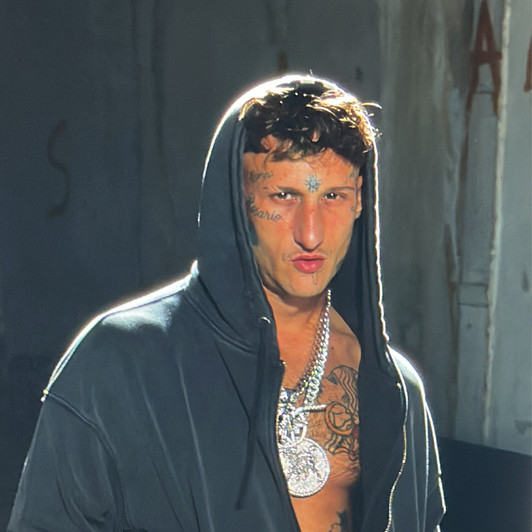

Lil Peep
Estilo: Rap/Emo
Lil Peep fue un rapero y cantante que fusionó emo y rap, con letras melancólicas que resonaron con millones.

Depresión Sonora
Estilo: Postpunk
Depresión Sonora mezcla electrónica con letras melancólicas y existenciales.

Post Malone
Estilo: Rap/Pop
Post Malone combina rap y pop con un estilo único que lo ha llevado a dominar las listas globales.

Richard Cheese
Estilo: Jazz
Richard Cheese es conocido por sus versiones humorísticas de canciones populares en estilo lounge.

David Bowie
Estilo: Rock/Pop
David Bowie es una leyenda del rock y pop, conocido por su estilo camaleónico y grandes éxitos.

Booba
Estilo: Rap
Booba es un rapero francés, famoso por su influencia en el rap europeo.

Queen
Estilo: Rock
Queen es una mítica banda de rock británica, conocida por múltiples himnos mundiales y su icónico cantante Freddy Mercury.

Nirvana
Estilo: Grunge
Nirvana revolucionó el grunge y el rock alternativo a niveles mundiales.

AC/DC
Estilo: Rock
AC/DC es una de las bandas de rock más grandes de todos los tiempos.

Marlon Ruales
Estilo: Reguetton
Marlon Ruales lidera desde hace varios años las listas de reguetton en España y Latinoamérica.

Guns N' Roses
Estilo: Rock
Guns N' Roses marcó la historia del rock con canciones icónicas como "Sweet Child O' Mine".

Oasis
Estilo: Britpop
Oasis es conocida por su estilo único de Britpop, destacando con "Wonderwall".

ABBA
Estilo: Pop
ABBA dominó el pop mundial durante una década con grandes éxitos.
XXXTentacion
Estilo: Rap/Lo-Fi
XXXTentacion mezcló rap con influencias de lo-fi, impactando a millones con canciones muy profundas.

Yung Beef
Estilo: Trap
Yung Beef es pionero en la escena del trap español con su enfoque único en letras y estilo.

KISS
Estilo: Rock
KISS es una banda de rock legendaria, famosa por sus presentaciones y espectáculos en vivo y varios éxitos.